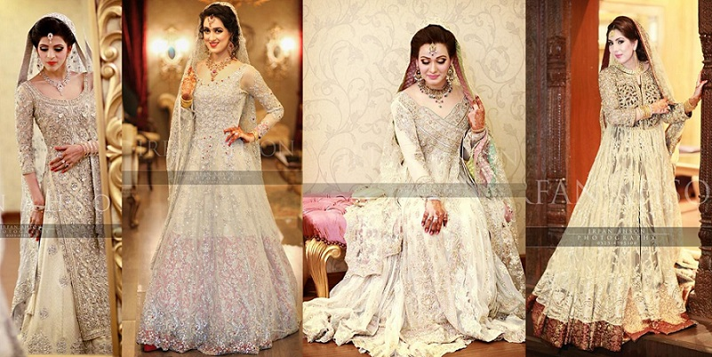
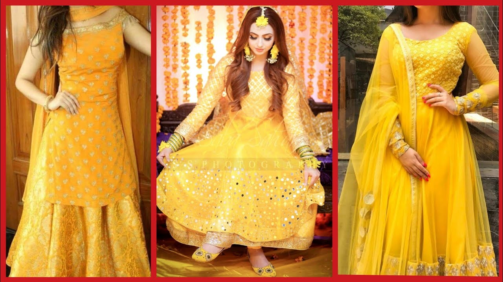
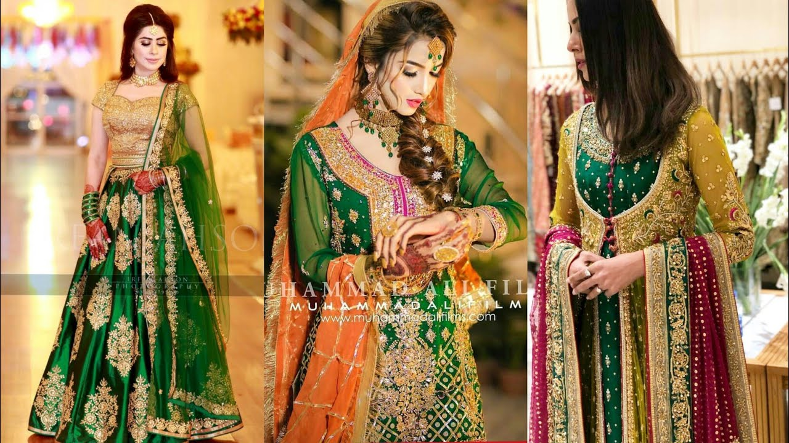

Buying Pakistani Bridal Dresses Online in Pakistan
Whether you live right next to a shopping mall or you live a mile away from it, you will definitely find more Pakistani Women's Shopping online now than ever before. In this technological era, ladies are not supposed to waste their precious time running around in the local markets, shops and malls to find what they are looking for. Now all they have to do is 'click' and order their desired item to be delivered at their doorstep. It's not a surprise anymore that online stores give better discount offers than retail stores do. Plus they are open to shop 24/7 to serve and assist you, so you can just sit carelessly in your designer dress at home, and sip your coffee while shopping online at 3 o'clock in the morning. Its really that simple.
Popular Types of Womens Dresses
There is a vast array of stylish womens dresses designs 2021out there. In Pakistan, women can easily find a wide range of dress designs and colours that can assist them to highlight their personal style, as well as accentuate their best features while hiding away the ones they are not very proud of. From intricate Pakistani bridal dresses to beautifully embroidered ones, there are quite a lot of dresses that have gained much popularity among Pakistani women. It is very prominent that each dress has its own specialty. Women's will find attractive designing with quality printing. All Ladies Dresses for Weddings offered with various stuffs such as linen, cotton, georgette, chiffon and other famous qualities are easily available and are offered with seasonal preferences. A few examples include:
Bridal Dresses: Finding the perfect Pakistani Bridal Dresses 2021 is probably one of the toughest things a woman will ever do in her life. You have to go to survey the market for at least a hundred times before finding the right bridal dress and when you finally do, the seller wants you to pay a price too much for it! To escape all that hassle, online stores like PakStyle.pk now provide a wide range of Pakistani Wedding Dresses with Prices online which are not only astoundingly beautiful but also quite reasonable.
Designer Dresses: What started off as a trend is now considered as a necessity by every fashion-conscious woman and girl alike. Designer Embroidery Dresses including lawn dresses and ethnic wear are the most popular women's wear on the internet. The good thing about these ladies dresses is that they are splendid for voicing your feminine side because of their unique floral and urban prints and cuts.
Embroidered Dresses: Embroidery is everywhere in spring. It's a sober embellishment that adds an instant spark to practically any kind of boring fabric your dress is made of. That's why Embroidered Dresses Pakistani are in huge demand these days. Embroidered dresses in Pakistan serve as a great semi-formal wear which can easily be carried by both women and children.
Maxi Dresses & Bridal Frocks: It's seriously amazing how a simple designer maxi dresses or designer frocks can make a woman look stylish as well as sophisticated. A long designer embroidered maxi dress always looks elegant and feels comfortable to wear. If worn the right way, they can swamp you up and make you look taller and smarter. May be that's the very reason designer embroidered maxis and frocks are so famous among women.
Net Dresses: Designer Embroidered Net Dresses flatter almost all kinds of figures. The darker shades are a must-have for fall and winter season and the lighter shades work wonders for summer and springs. Designer Net Dresses serve as a great investment and a classic addition to your formal dress collection 2021.
Wedding Dresses: To glam up a desi wedding, a traditional Pakistani Wedding Dresses are always the preferred choice among Pakistani women. Pakistani Bridal Lehengas, Pakistani Bridal Sarees, Pakistani Anarkali Frocks, and heavily embellished wedding dresses are few of the many amazing styles of dress that ladies opt for when they are shopping online for a traditional wedding dress.
Where to find best Pakistani Dresses Online?
Just visit a single online clothing store such as PakStyle.pk and check the Women's Dresses Online categories to find the latest collection of Pakistani Dresses for Sale online. All ladies dresses listed at PakStyle.pk have been designed in different color combinations. Whether you are looking for Pakistani Bridal Dresses, Pakistani Party Dresses or Pakistani Wedding Dresses or Pakistani Chiffon Suits 2021 for wedding functions, browse PakStyle.pk to find the latest Pakistani wedding dresses designs or pictures online. You can also follow us at Facebook Page to get updates about the latest dresses collection 2021 upon launching. So what are you waiting for? Shop at PakStyle.pk today and avail our Free Home Delivery nationwide with Cash on Delivery service.
Bridal engagement dresses 2021 in pakistan
The Groom's family will approach the bride and ask for her hand in marriage. Rings are now commonly exchanged between the couple. Prayers and blessings will be read and cake will be cut . From this point the wedding day is priority for everyone , dates are pencilled in diaries and everyone prepares.
Bridal nikkah dresses 2021 in pakistan
Nikkah is the most beautiful relation a girl and guy get tied into. It is the day when all the friends and family members get together to celebrate your big day with you, the day when you finally say yes to your man. It is a dream of every girl to dress up in the most beautiful attire on the day of her Nikkah....

Bridal mayoo dresses 2021 in pakistan
Corona might have delayed a lot of weddings happening during 2020, but 2021 has started as a wedding year with a lot of weddings happening since the start of the year. Weddings trends continuously evolve, which means that new trends are being introduced regularly, so you need to catch up on them to look chic for your wedding or the weddings you mig...
Bridal mehndi dresses 2021 in pakistan
Corona might have delayed a lot of weddings happening during 2020, but 2021 has started as a wedding year with a lot of weddings happening since the start of the year. Weddings trends continuously evolve, which means that new trends are being introduced regularly, so you need to catch up on them to look chic for your wedding or the weddings you mig...
Bridal barat dresses 2021 in pakistan
Barat is sometimes with nikkah then someone separates. Barat is a function in which the groom comes with his
family and guests and takes the bride away with him .In this function the bride wears more red and golden dress...
Bridal valima dresses 2021 in pakistan
Among the three necessary wedding functions of any marriage ceremony in Pakistan, Walima is the third and the final one. Walima is the grand lunch or dinner given by the groom's family and usually is attended by hundreds of guests. When the Barat function is all about the bright reds and pinks, brides prefer wearing lighter shades, as well as metal....